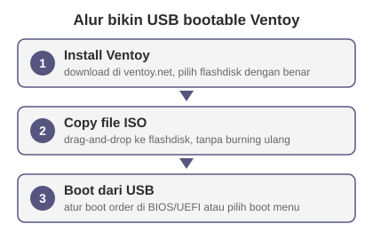
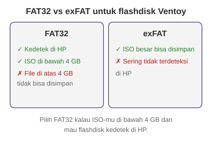

Cara Bikin USB Bootable Ventoy (Kedetek di HP dan Laptop)
Home > Tutorial > Cara Bikin USB Bootable Ventoy (Kedetek di HP dan Laptop)
Arsip
- Instal Apache, MySQL, PHP dan phpMyAdmin di Archlinux 2021
- Konfigurasi Virtual Host Apache Server Di ArchLinux 12 Jun 2021
- Cara Deploy Blog Statis ke GitHub Pages 17 Nov 2026
- Cara Daftar make.fun dengan Agent dan Biar Agent Cari Bounty Sendiri 17 Nov 2026
- Cara Berburu Bug Bounty dengan Agentic-Bug-Hunter (Gratis, AI Lokal) 18 Nov 2026
- Cara Pasang Google Analytics 4 dan Tag Manager di Blog Statis 26 Nov 2026
- Cara Optimasi SEO Blog GitHub Pages 26 Nov 2026
- Cara Ikut Bounty make.fun Pakai AI Agent 26 Nov 2026
- Cara Bikin Bot Tank di battle.training 26 Nov 2026
- Cara Bikin USB Bootable Ventoy (Kedetek di HP dan Laptop) 26 Nov 2026
Ventoy adalah tool gratis untuk membuat USB bootable yang bisa menampung banyak file
ISO sekaligus. Satu flashdisk cukup untuk installer Linux, Windows, dan yang lainnya — tinggal pilih dari menu boot saat komputer dinyalakan. Tidak perlu membawa banyak flashdisk, dan tidak perlu burning ulang setiap kali ganti ISO.

Gambar 1: Alur bikin USB bootable Ventoy — install, copy ISO, boot.
Apa Itu Ventoy
Ventoy (ventoy.net) adalah tool gratis untuk bikin USB bootable multi-
ISO. Dengan Ventoy, satu flashdisk bisa menampung banyak file ISO — Linux, Windows, dan lain-lain — dan kamu tinggal pilih ISO mana yang mau di-boot dari menu yang muncul saat komputer dinyalakan. File ISO-nya tinggal di-copy ke flashdisk seperti file biasa, jadi menambah atau menghapus ISO semudah copy dan delete file.
Yang Dibutuhkan
- Flashdisk — isinya akan terhapus saat install Ventoy, jadi pakai flashdisk kosong atau backup dulu isinya.
- File
ISO sistem operasi yang mau di-boot, misalnya ISO Linux atau Windows.
- Komputer untuk menjalankan installer Ventoy.
- Download Ventoy di ventoy.net.
Langkah 1: Install Ventoy ke Flashdisk
Download Ventoy dari ventoy.net, lalu jalankan installernya. Pilih flashdisk kamu di daftar device, lalu klik Install. Tunggu sampai prosesnya selesai.
Perhatian: Install Ventoy menghapus SEMUA isi flashdisk. Backup dulu file pentingmu sebelum install. Pastikan device yang kamu pilih benar-benar flashdisk kamu — salah pilih device bisa menghapus isi disk lain.
Langkah 2: Isi dengan ISO
Setelah Ventoy terinstall, flashdisk sudah siap diisi. Copy file
ISO ke flashdisk seperti copy file biasa — tinggal drag-and-drop. Tidak perlu burning ulang: mau tambah ISO baru tinggal copy, mau hapus ISO yang sudah tidak perlu tinggal delete file-nya.
Tips: Beri nama file
ISO yang jelas supaya gampang dipilih di menu boot nanti.
Langkah 3: Boot dari USB
Colokkan flashdisk ke komputer yang mau di-boot, lalu nyalakan atau restart komputernya. Atur boot order di
BIOS/UEFI supaya USB jadi prioritas, atau buka boot menu dan pilih flashdisk kamu. Setelah itu muncul menu Ventoy — pilih ISO yang mau di-boot, dan komputer akan berjalan dari ISO tersebut.
Tips: Kalau menu Ventoy tidak muncul, cek lagi boot order di
BIOS/UEFI — pastikan flashdisk berada di urutan pertama.
Flashdisk Tidak Terdeteksi di HP
Ventoy tidak punya aplikasi resmi di Android, jadi tidak ada cara resmi untuk membuat atau mengatur USB Ventoy langsung dari HP. Masalah yang sering muncul: flashdisk yang diformat
exFAT+MBR sering tidak terdeteksi di HP. Format FAT32 lebih kompatibel di HP, tapi file ISO di atas 4 GB tidak bisa disimpan di FAT32.

Gambar 2: FAT32 vs exFAT — pilih sesuai kebutuhanmu.
Jadi pilihannya jujur begini: pakai
FAT32 kalau mau flashdisk kedetek di HP dan ISO-mu di bawah 4 GB. Pakai exFAT kalau ISO-mu besar, tapi siap-siap flashdisk tidak kedetek di HP.
Tips: Pakai
FAT32 kalau ISO-mu di bawah 4 GB dan mau flashdisk kedetek di HP. Pakai exFAT kalau ISO-mu besar — tapi siap-siap flashdisk tidak kedetek di HP.
Tips
- Backup isi flashdisk sebelum install Ventoy — install menghapus semuanya.
- Simpan
ISO yang sering dipakai di flashdisk; yang sudah tidak perlu tinggal dihapus seperti file biasa.
- Cek format flashdisk (
FAT32 atau exFAT) kalau flashdisk tidak terbaca di HP — lihat bagian di atas.
- Download Ventoy dari situs resminya di ventoy.net.
Referensi
Suka tutorial ini? Dukung penulis biar makin banyak tutorial gratis.
Dukung via Saweria